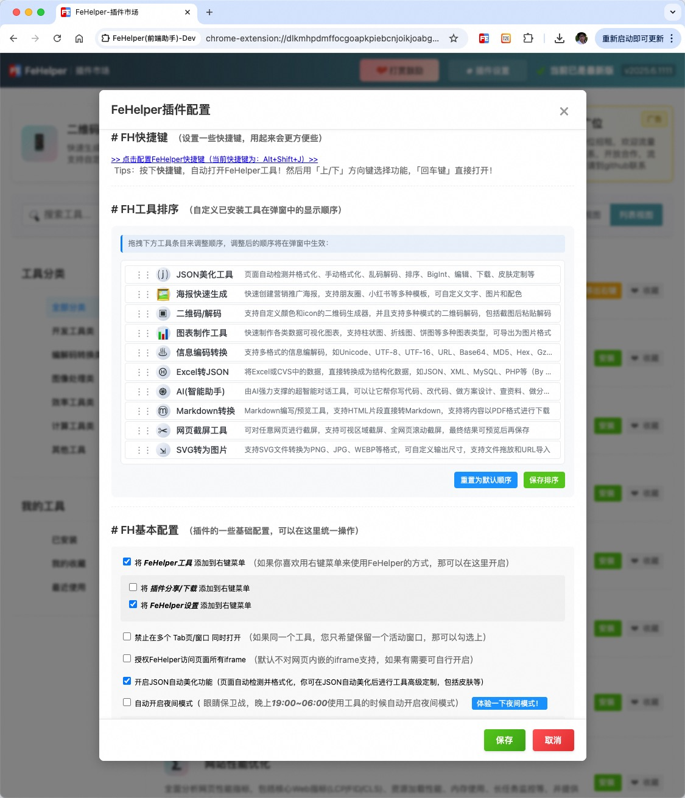
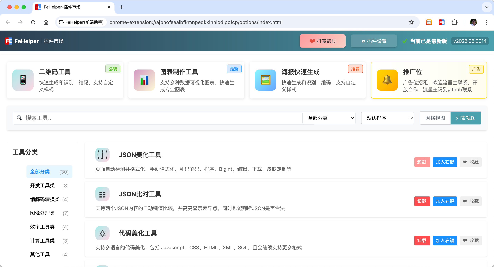
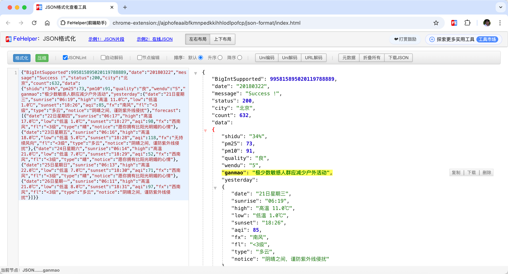
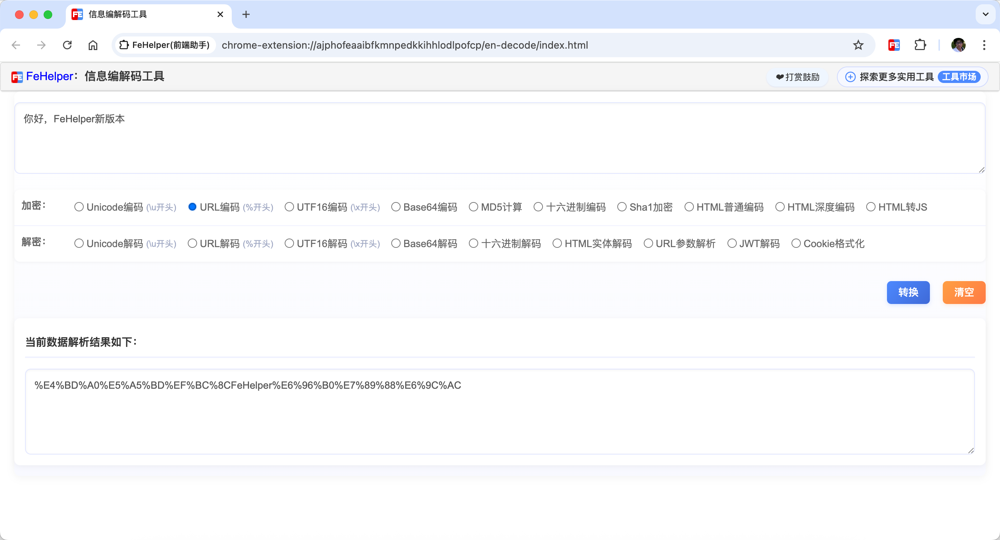

处理接口与数据
JSON 自动美化、结构比对、BigInt 无损、嵌套转义解析、Excel 转 JSON、Mock 数据和图表制作。
FeHelper 是一款 开源浏览器扩展，2012 至今持续维护。集成 34+ 种实用工具：JSON 格式化/BigInt 精度、编解码/Gzip/JWT、二维码/条形码、UUID/雪花 ID、时间戳转换、AI 智能助手、代码美化、接口调试等，覆盖开发全流程。
扫码即用，无需安装
微信扫码使用
它把开发者每天反复打开的零散网页、脚本和临时工具，整理成一个浏览器里的工作台。
JSON 自动美化、结构比对、BigInt 无损、嵌套转义解析、Excel 转 JSON、Mock 数据和图表制作。
URL、Base64、Unicode、Hex、JWT、Cookie、Gzip、字符串转义、时间戳、FILETIME、进制和颜色互转。
简易 Postman、WebSocket、页面性能分析、网页截屏、取色、栅格标尺和油猴脚本覆盖日常排查。
工具市场、快捷键、右键菜单、收藏、最近使用、夜间模式和本地配置，让扩展保持轻而可控。
先用本地工具完成格式化、识别和转换，再在需要判断、修复、解释时调用 AI。
支持 Gemini Nano 的 Chrome 可在本机运行，首次使用可能需要下载模型，不需要 API Key。
内置 SiliconFlow 服务商配置，默认使用 Qwen2.5-Coder 模型，需要用户配置自己的 API Key。
支持自定义 API URL 和模型名称，适配任意 OpenAI Chat Completions 兼容服务。
隐私边界：普通工具优先本地处理。AI 功能只在用户主动发起时，把对应输入发送给所选模型服务。
修复错误，并从样例生成 TypeScript、JSON Schema 或 Zod。
自动尝试 URL、Base64、Unicode、Hex、Gzip、JWT 等解码链路。
生成 Wi-Fi、名片、日程等标准二维码内容，识别解码结果并检查扫码可靠性。
格式化代码后补充意图、风险点和可读性建议。
检查请求配置、响应现场、Headers、Body、鉴权和 CORS 线索。

不是把功能堆在一起，而是覆盖从接口数据、页面调试到内容生成的常见路径。
自动检测、手动格式化、BigInt、排序、编辑、下载、嵌套转义解析。
支持 JSON、文本、代码、日志和 Markdown 的按行差异对比。
GET、POST、HEAD、PUT、DELETE 请求调试，响应 JSON 自动格式化。
测试 ws/wss 连接、消息发送、返回内容和联调过程。
JavaScript、CSS、HTML、XML、SQL 格式化，以及 HTML、JS、CSS 压缩。
常用正则速查、匹配测试、页面性能指标、资源加载和长任务分析。
Unicode、UTF-8、UTF-16、URL、Base64、MD5、SHA1、Hex、JWT、Cookie、Gzip。
先本地探测解码链路，再让 AI 解释明文结构和敏感字段风险。
Unix 秒/毫秒、日期字符串、世界时区和 Windows FILETIME 互转。
2 到 36 进制 BigInt 无损转换，HEX、RGB、RGBA、HSL、HSV 互转。
二维码生成/解码，Code128、EAN-13、EAN-8、UPC、ITF-14 条形码导出。
图片链接、文件、截图和 Base64 互转，适合快速嵌入和排查。
SVG 转 PNG、JPG、WebP，支持尺寸设置、拖放和 URL 导入。
可视区截屏、全页截屏、页面取色和 10px 栅格标尺。
把结构化数据快速做成图表，或使用模板生成运营海报。
写代码、改代码、方案设计、资料整理和分析，支持本机 AI、SiliconFlow 和自定义 OpenAI 兼容接口。
解析失败时修复 JSON，解析成功后生成 TypeScript、JSON Schema 或 Zod。
本地便签、目录管理、导入导出、Markdown 预览、HTML 转 Markdown 和 PDF 下载。
配置页面匹配规则，注入脚本和样式，支持 .user.js 导入导出和运行日志。
轻量脑图、本地存储、自动保存、批量导入导出和图片下载。
UUID v4、Twitter Snowflake 风格雪花 ID、NanoID，支持批量生成和字段解析。
按长度、数字、大小写字母和特殊符号生成随机密码。
生成、解释 Crontab 表达式，批量转换时间、计算时区和日期差。
计算还款计划，按还款额反推贷款实际利率。
把 Excel、CSV、TSV 转为 JSON、XML、MySQL、PHP 等结构。
本地开发自定义工具，并集成到 FeHelper 工具市场。
官网预览使用扩展真实截图和介绍视频，便于判断安装后的实际体验。



支持商店安装、无梯镜像下载，也可以从 GitHub 源码构建。Firefox 版本会按平台能力移除少量不兼容工具。
下载 CRX 或 ZIP 后，在 chrome://extensions 打开开发者模式，再拖入 CRX 或加载已解压目录。